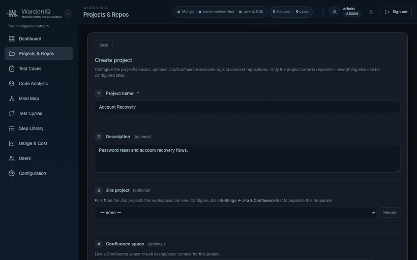

wardenIQ
QC for AI-built software. Point wardenIQ at your requirement docs and your code. It writes a structured test suite from the docs, then continuously checks your code against those tests, so you always know what is covered, what is automated, and what is at risk.
View on GitHub Getting started Installation

What it does
- Generates a typed test suite (functional, E2E, API and non-functional) from PRD, HLD and LLD documents.
- Checks the real code against every test case and marks it covered, partial or uncovered, with the files read as evidence.
- Gives a live map of coverage, automation and risk gaps you can act on.
- Works with hosted LLMs or fully local models via Ollama.
- Runs as a single lightweight app container: point it at a cloud MongoDB and an LLM provider, or use the bundled all-in-one demo mode.
Try it
git clone https://github.com/adlerqa/wardeniq.git wardenIQ && cd wardenIQThen follow the getting started guide. The app opens at http://localhost:8001.
Open source
wardenIQ is early, evolving and open. It is licensed MIT: fork it, run it on-prem, use it commercially. Contributions are welcome; start with the good first issues.